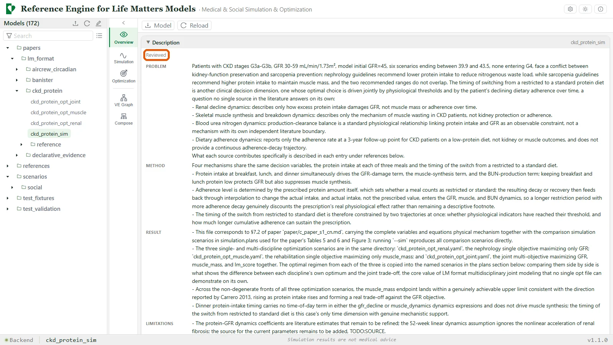
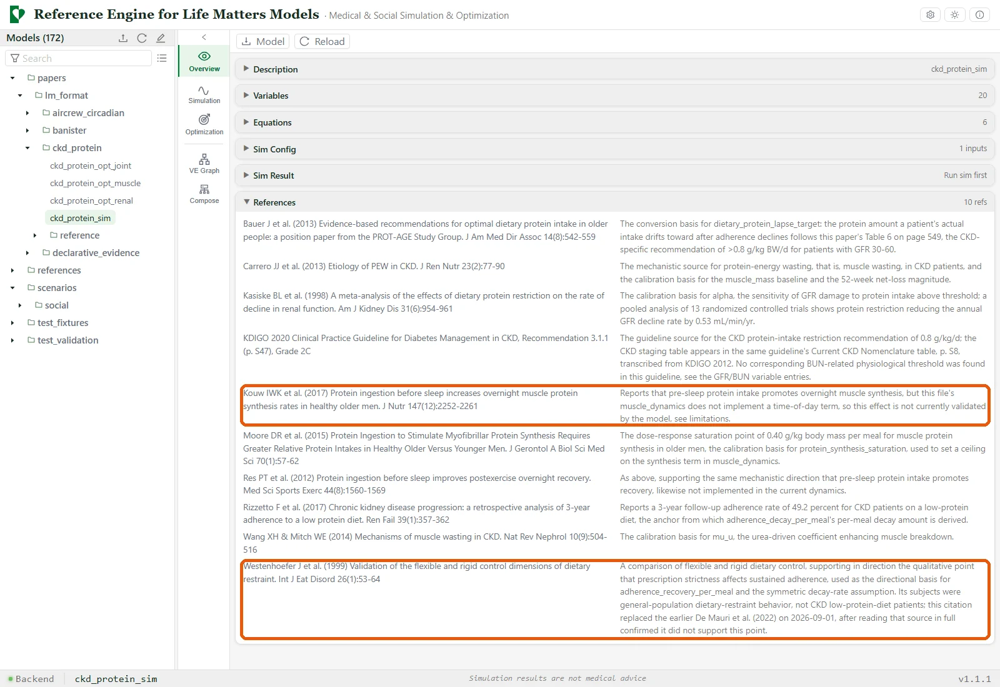
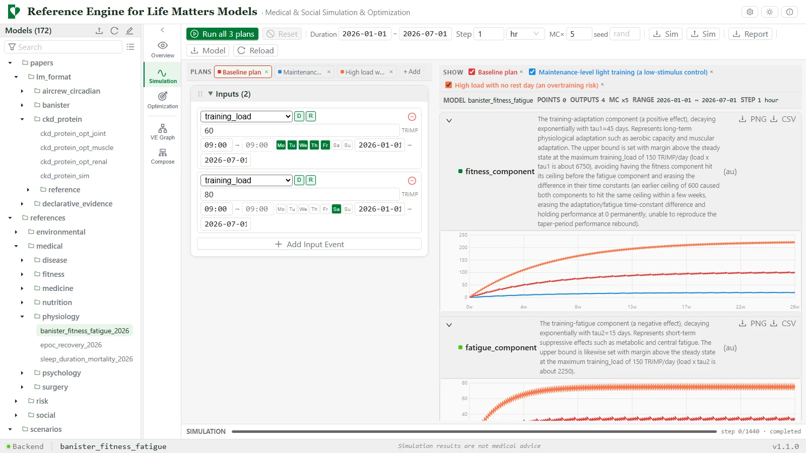
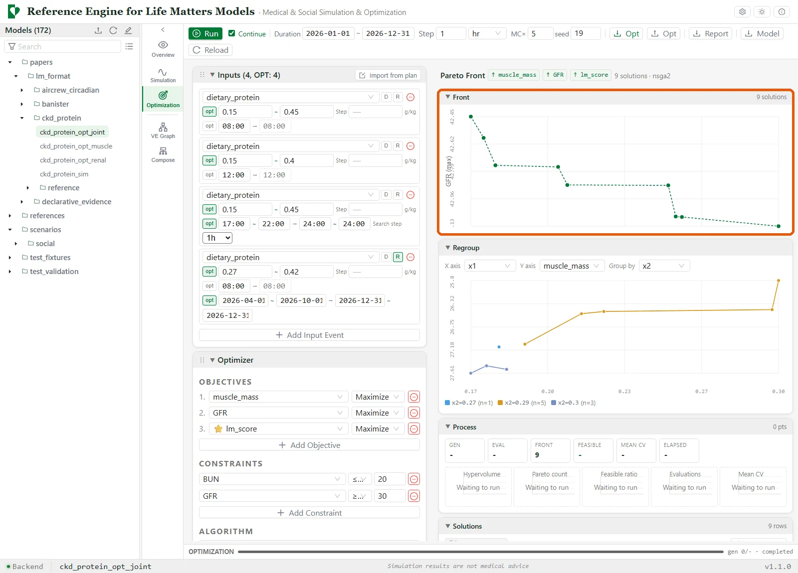
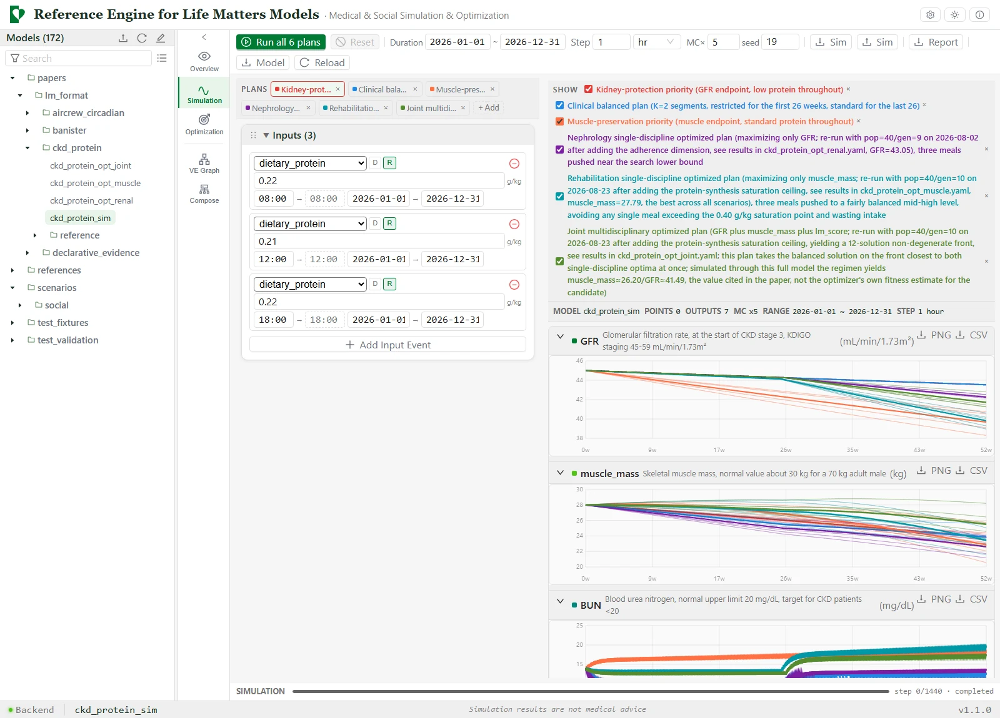
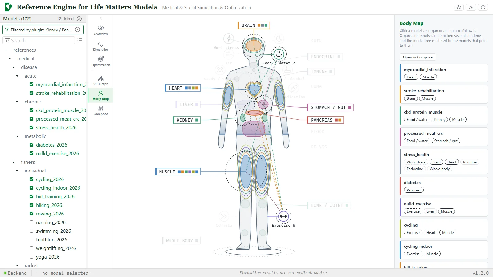
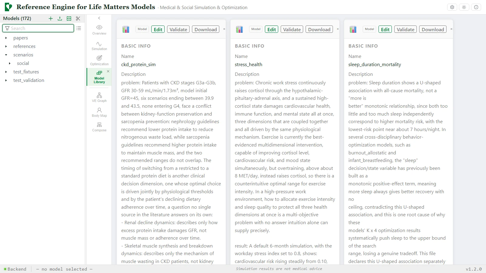
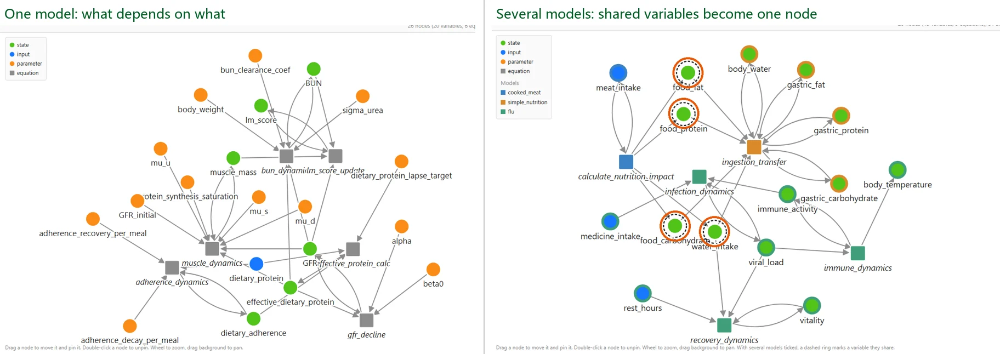
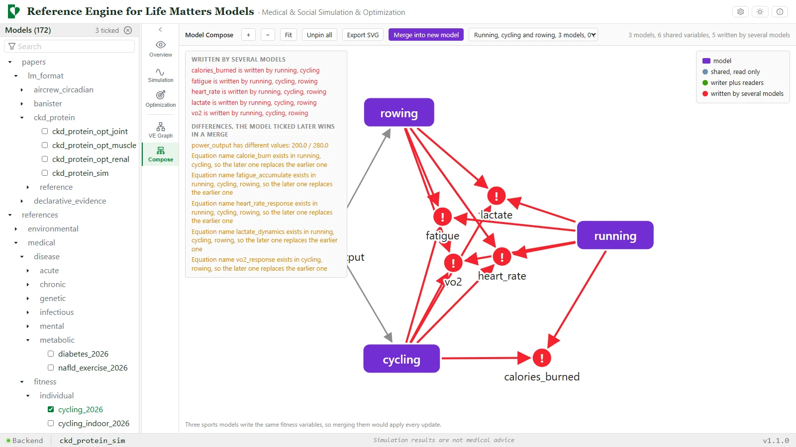

Life Matters
Reference EngineModel libraryLatest releaseContact
Published findings about health and behavior rarely become something that can be run, compared or combined, and as they spread they tend to lose the dose, population and duration they were found under. Life Matters (LM) is an attempt to let findings travel together with the conditions under which they hold. A model is a plain YAML file that states its variables, equations, a simulation setup and, optionally, an optimization problem, and each parameter records the study it came from, or is marked as lacking one. The Reference Engine runs the models, searches for good regimens across several objectives, and lets models from different fields work together in one simulation. Every number traces to its source, so each step can be checked.
LM is an aid for analysis. It shows what a set of published findings implies and how they can be put to work together. It does not give medical advice. Review of the models is still limited in coverage, and the models shown here serve as demonstrations of the interface.
An example it is built around
For a patient with chronic kidney disease at stage 3, protecting kidney function and keeping muscle both bear on protein intake, and each comes with its own recommended range. The CKD model in the library brings both mechanisms together, along with how well a patient keeps to a restricted diet over time, and looks for the balance between them. The tour below follows that model, and a few others, through the interface.
Read and run



Optimize
Most hard choices in life are not a search for one best answer but several goals pulling against each other. LM writes the pull as a structure that runs, shows what it costs to favor one goal over another, and leaves the order to the person who chooses.


Find, build and compose




In motion
How it fits together
- Model library. YAML models, licensed CC BY 4.0, each with literature references, a review status and ratings.
- Reference Engine. A Python backend with a React interface and a command line, for simulation, optimization and model composition. The interface is extended through plugins, and the structure graph, the Body Map and the composition view above are plugins. Every model and every tab has its own link, and a button in the toolbar copies it, so a discussion can point at the same place. An online demo is linked from the README of the repository.
Status
Models differ in maturity, and each one records how far it has been reviewed, together with ratings for its variables, equations, simulation and confidence. Review is still limited in coverage at this stage, and the models in the tour above serve as demonstrations. Comments and criticism are welcome, by an issue on GitHub or by email.
The code of the Reference Engine was written with AI coding assistance for code generation, automated testing and documentation. Citation details are in CITATION.cff.